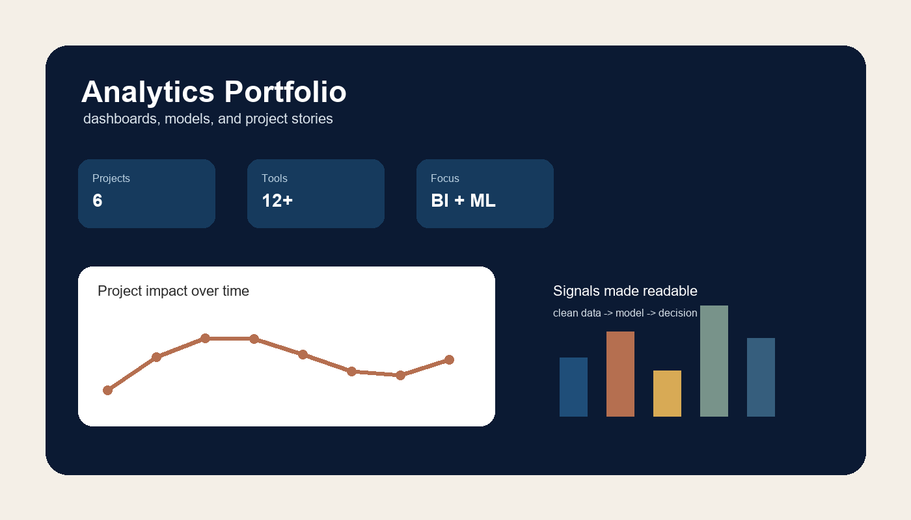

Healthcare AI Workflow
A project concept focused on turning healthcare data into cleaner, explainable recommendations. The goal is not just prediction, but helping a user understand why a result matters.
Read case study →Analytics · Business Intelligence · Data Science
Hi, I am Markuss Saule. I build dashboards, models, simulations, and analytics workflows that help people understand data faster and make better decisions.

These projects show the kind of work I want my portfolio to be known for: practical analytics with a clear problem, a clear method, and a clear result.
A project concept focused on turning healthcare data into cleaner, explainable recommendations. The goal is not just prediction, but helping a user understand why a result matters.
Read case study →
A simulation that tests business assumptions before a decision is made. It compares possible outcomes and shows how demand, pricing, and timing can change the result.
Read case study →
A dashboard-style project that turns risk factors into a ranked view. It is designed to make priorities easier to explain and defend.
Read case study →I am interested in the space where business questions, data, and decision-making meet. My work focuses on making analysis understandable, useful, and honest about its assumptions.
See Resume and Skills →Python, SQL, R, Excel, Power BI, Tableau, statistics, simulation, dashboards, and model evaluation.
Review technical skills →Explore the project stories, review my technical skills, or connect with me through GitHub and LinkedIn.